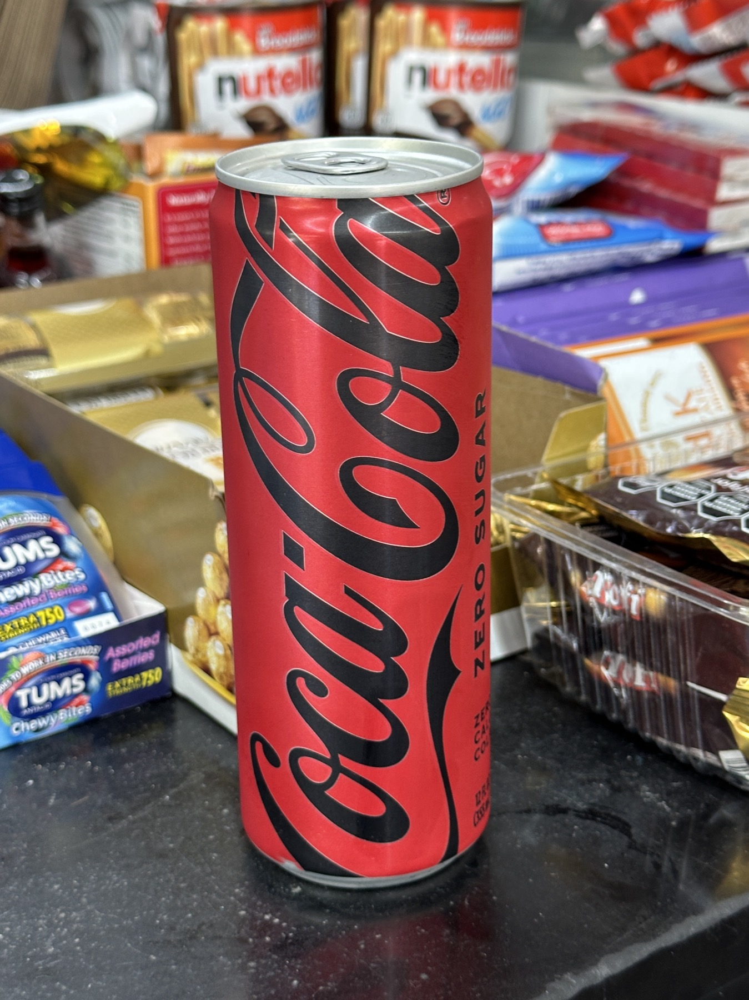
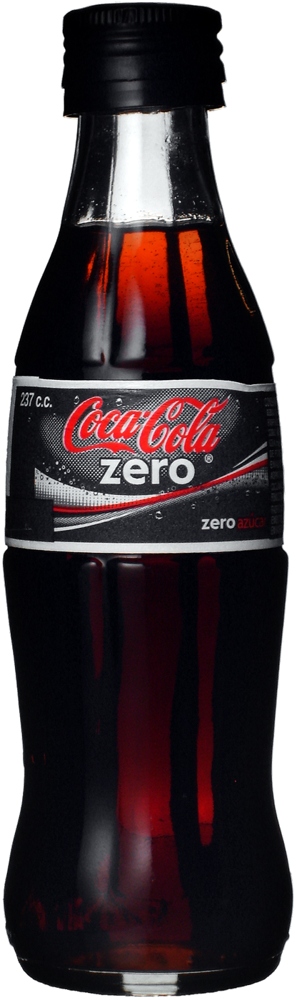

Front
Caramel-led cola snap with immediate fizz.
Unofficial concept / Coca-Cola Zero Sugar
Built as a static GitHub Pages-ready landing page with a colder palette, a sharper rhythm, and a layout that treats the product like the headline.


Flavor Profile
The pitch is simple: classic Coca-Cola character without the sugar load. The experience lands darker, tighter, and more direct when the bottle is cold and the pour has a little bite to it.
Caramel-led cola snap with immediate fizz.
Balanced sweetness without the syrupy drag.
Clean, dry close that makes the next sip easy.
The Numbers
A quick read of the core nutrition callouts typically associated with a 12 fl oz can on the Coca-Cola US product page.
Rituals
This concept page leans into the product as a repeat-use drink: desk reset, late session, and the colder shared pour.
Fast chill, sharp carbonation, and no sugar crash in the middle of a long screen-heavy block.
A colder, darker profile that sits naturally beside film, games, edits, and the quiet part of the night.
Over ice, in glass, or straight from the bottle. The product still works when the moment slows down.
Formats
The product shifts mood depending on packaging. The can feels immediate, the glass bottle feels colder and more deliberate, and the larger pour brings the profile into a shared setting.
Quick crack, direct chill, fast reset.
Sharper cold feel with a slower sip rhythm.
Built for ice, food, and longer table time.
Final Pour
Hero on top, five-plus sections, no build step, and relative assets only. Drop the folder onto GitHub Pages and it works.